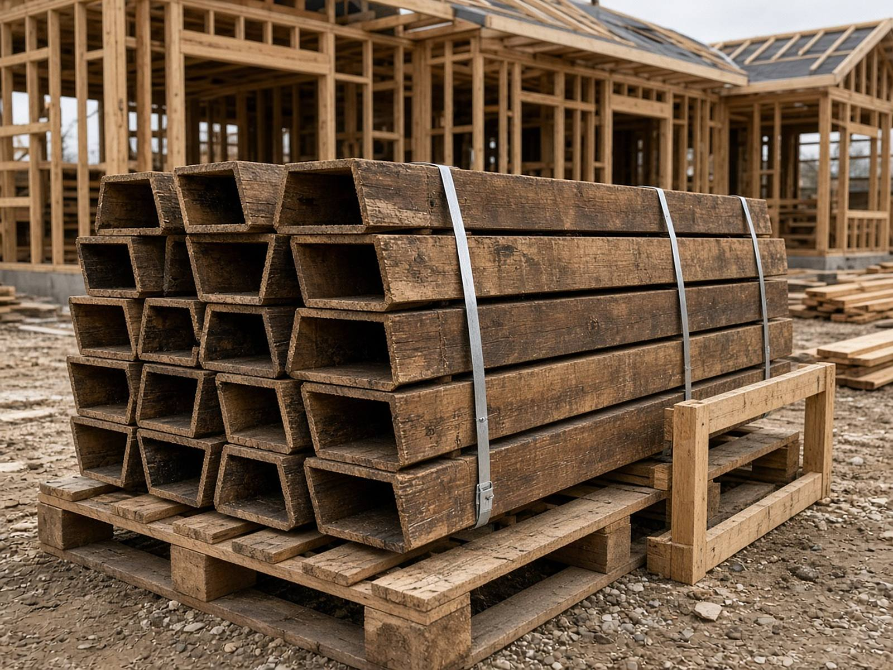

Order checklist
Box beam order checklist: mistakes builders can avoid.
A practical overview for home builders, GCs and remodelers checking a trade order before they submit. Wraps are in the wrap guide. Piece length and overage are in the takeoff guide. The form is in the how to order guide. Stain is in the finish guide. Delivery is in the delivery guide. Bid wording is in the bid spec guide.
Before you press Place order, confirm the shell will cover the beam line, split any run longer than 24 feet into pieces, keep one line per size or finish, name the stain on a prestained order, request a liftgate when the jobsite has no dock or forklift, and give a delivery address or say pickup. These beams are decorative and non-structural. Extra linear feet for cuts and fitting, if any, are the builder's call. What to confirm with the homeowner before you write those lines is in the selections guide.
This page is a checklist for a trade order. Pricing is quote-based. There is no public price list on this page. It is not a stamped specification or an engineer letter. These beams are decorative and non-structural.
On this page: Mistakes · Before you submit

-
Choosing a listed height or width that will not cover the beam line
The fix. Measure the existing beam or beam line, then choose a height and a width of 4, 6, 8, 10 or 12 inches that will cover it, and note a size larger than 12 inches on the order because it is quoted on request. How to plan that wrap is in the wrap guide.
-
Forgetting a run longer than 24 feet needs more than one piece
The fix. Each piece can be up to 24 feet, so break a longer run into pieces of 24 feet or less while the linear feet stay the length of the run. A run that measures 40 ft is two pieces, 24 ft and 16 ft (24 + 16 = 40 linear feet), which is illustrative math, not a quote, as the takeoff guide shows.
-
Mixing sizes or finishes on one line
The fix. Use one line per size or finish: length rows share that line's height, width, and finish, and a different height, width, or finish is its own line, with a second size or finish in the notes. How the form works is in the how to order guide.
-
A prestained order missing the stain brand, type, or color
The fix. On a prestained line, enter the stain brand, the stain type (for example oil-based, water-based, gel, semi-transparent or solid) and the color name or number, because the beams are finished to that spec and arrive finished and ready to hang. How to enter the stain is in the finish guide.
-
No liftgate when the jobsite has no dock or forklift
The fix. Check the liftgate box, or ask for a liftgate, if the jobsite has no dock or forklift. How an order ships is in the delivery guide.
-
An incomplete delivery address, or not saying pickup
The fix. Enter a delivery address and ZIP, or say pickup, and choose freight, local delivery, or pickup; the form estimates freight from the delivery ZIP, and shipping stays an estimate until it is confirmed before you pay. What to have ready is in the delivery guide.
-
Treating the beams as structural
The fix. These beams are decorative and non-structural; they wrap or hang below framing for appearance and are not load-bearing members, so do not spec or use them as structural lumber or as a replacement for a load-bearing member, and the existing structure stays load-bearing. What to list on a bid is in the bid spec guide.
-
Overage left unplanned
The fix. Cuts and fitting can use more material than the measured run; whether to add extra linear feet, and how much, is the builder's call, and this page does not set an overage percentage, so order the linear feet you decide to buy and write them as piece lengths and quantities. How that choice sits on a takeoff is in the takeoff guide.

Before you submit
Tick these against the job before you press Place order on the order form.
- Contact name, company, email, and phone
- A height and width that will cover the beam line
- Piece lengths of 24 feet or less
- One line per size or finish
- Stain brand, type, and color, or unfinished
- A delivery address and ZIP, or pickup
- A liftgate if the jobsite has no dock or forklift
- Extra linear feet decided, or the measured runs only
Wholesale Builder Beam is trade only. We sell to home builders, general contractors and remodelers.
Use the order form. Enter your contact and company, the height and the width, the piece lengths and quantities, prestained or unfinished, and a delivery address or pickup.
Questions go to wholesalebuilderbeam@agentmail.to.
See the wrap guide for covering a beam line, the sizing guide for the size list, the takeoff guide for linear feet, the how to order guide for the form, the finish guide for stain, the delivery guide for delivery, or the bid spec guide for bid wording.
Checklist
Order checklist questions, answered.
What should I check before I submit a box beam order?
Check the height and width against the beam line you are wrapping, split any run longer than 24 feet into pieces, and keep one line per size or finish. On a prestained order, enter the stain brand, type and color. Enter a delivery address and ZIP, or say pickup, and ask for a liftgate if the jobsite has no dock or forklift. These beams are decorative and non-structural. Whether to add extra linear feet for cuts and fitting is the builder's call.
Can two sizes or two finishes share one order line?
No. Use one line per size or finish. The height, the width, and the finish on the form apply to every length row. A different height, width, or finish is its own line. Put a second size or finish in the notes.
What if a run is longer than 24 feet?
Each piece can be up to 24 feet. A run longer than 24 feet is more than one piece. Break that run into pieces of 24 feet or less. The linear feet stay the length of the run. A run that measures 40 ft is two pieces, 24 ft and 16 ft: 24 + 16 = 40 linear feet. That is illustrative math, not a quote.
Should these box beams be ordered as structural lumber?
No. These beams are decorative and non-structural. They wrap or hang below framing for appearance and are not load-bearing members. Do not spec or use them as structural lumber or as a replacement for a load-bearing member. The existing structure stays load-bearing.